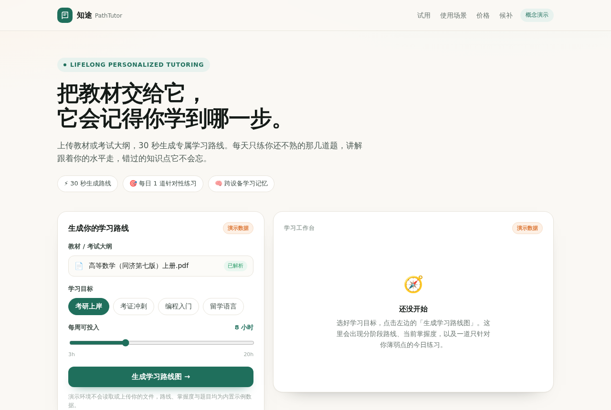

会记住你的AI家教，45734星
HKUDS/DeepTutor · 教育学习Apache-2.0⭐ 45,734

HKUDS/DeepTutor 是香港大学 HKUDS 实验室开源的一个 AI 家教项目，Apache-2.0 许可。从 README 看，它最核心的特点是「长期记忆 + 个性化」：你上传教材、考纲或资料，它会建知识库、生成学习路径、出每日练习题，还能记住你学到哪、错在哪，继续往下讲。
最近火的原因很直接：星标已经 45734，每天还在涨约 1500。一是「AI 家教」这个场景几乎人人有体感，二来项目迭代极快，几乎每天一个版本，功能覆盖阅读、听力、题库、语音、多语言界面，看起来很像一个成型产品，而不是 demo。
如果做成产品，机会不在复刻它的全功能，而在收窄：比如只做某一类考试的备考（雅思、考研、考证），用户上传大纲，系统每天推一套题加讲解；或者只做「错题追踪」这一个环节，把长期记忆做成卖点。官方版本太重、要配多种模型 key 和 RAG 索引，普通用户装不起来，这就是轻量产品的空间。
今日 Top 5
| # | 项目 | 传播 | 创业 | 综合 |
|---|---|---|---|---|
| 1 | HKUDS/DeepTutor | 8.0 | 7.45 | 7.8 |
| 2 | andyhuo520/digital-human-koubo | 8.33 | 7.35 | 7.79 |
| 3 | Jakeschincariol/day-trader-skill | 7.33 | 7.35 | 7.42 |
| 4 | KnifeLemon/Filee | 8.33 | 7.15 | 7.13 |
| 5 | wheresryan22/anatomy | 7.67 | 6.6 | 6.65 |